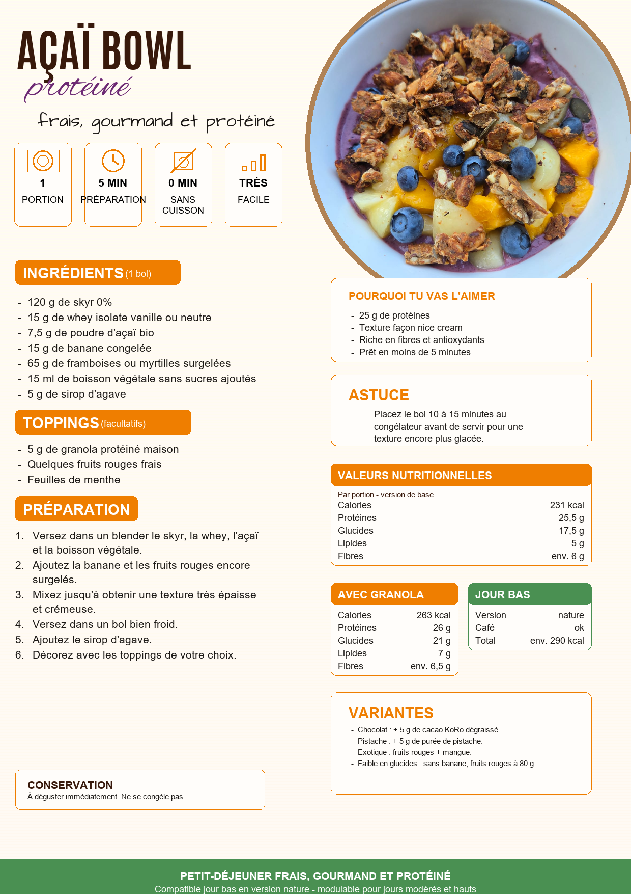

R001 - Petit-dejeuners
Acai Bowl proteine

Ingredients
- 120 g de skyr 0 %
- 15 g de whey isolate vanille ou neutre
- 7,5 g de poudre d'acai bio
- 15 g de banane congelee
- 65 g de framboises ou myrtilles surgelees
- 15 ml de boisson vegetale sans sucres ajoutes
- 5 g de sirop d'agave
Preparation
- Versez dans un blender le skyr, la whey, l'acai et la boisson vegetale.
- Ajoutez la banane et les fruits rouges encore surgeles.
- Mixez jusqu'a obtenir une texture tres epaisse et cremeuse.
- Versez dans un bol bien froid.
- Ajoutez le sirop d'agave.
- Decorez avec les toppings de votre choix.
Conseils de cuisson
Placez le bol 10 a 15 minutes au congelateur avant de servir pour une texture encore plus glacee.
Conservation
A deguster immediatement. Ne se congele pas.
Macros recette entiere
| Calories | 231 |
|---|---|
| Proteines | 25,5 g |
| Glucides | 17,5 g |
| Lipides | 5 g |
| Fibres | 6 g |
Macros par portion
| Calories | 231 |
|---|---|
| Proteines | 25,5 g |
| Glucides | 17,5 g |
| Lipides | 5 g |
| Fibres | 6 g |
Variantes
- Avec granola : 263 kcal, 26 g proteines, 21 g glucides, 7 g lipides, 6,5 g fibres.
- Chocolat : + 5 g cacao degraisse.
- Pistache : + 5 g puree de pistache.
- Exotique : fruits rouges + mangue.
- Faible en glucides : sans banane, fruits rouges a 80 g.
Suggestions d'accompagnement
- 5 g de granola proteine maison
- Quelques fruits rouges frais
- Feuilles de menthe
Compatibilite
Jour BasJour ModereJour Haut
Notes
Frais, gourmand et proteine. Version nature compatible jour bas.